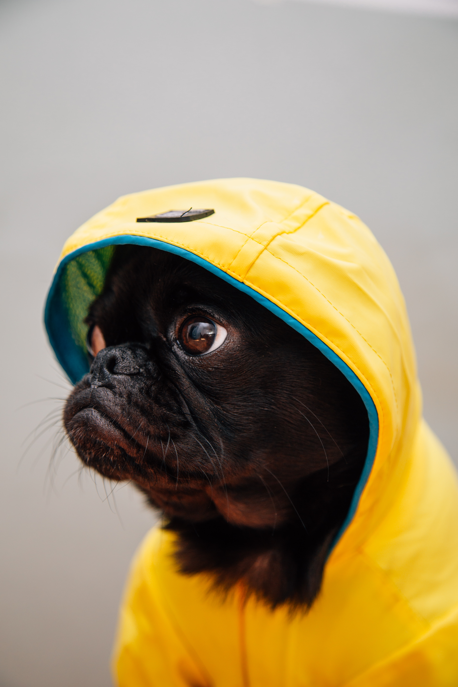
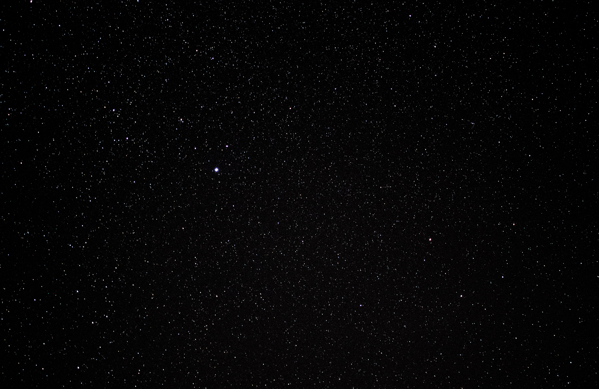

|  | Charles 🇵🇭 |
| shark: | Photo by Jakob Owens on Unsplash |
| concrete | Annie Spratt |
|  | Jeremy Perkins |
| Road image | Luke Stackpoole |
| flames | https://www.pexels.com/photo/blaze-burn-burning-burnt-97492/ |
| road better | Photo by adrian on Unsplash |
| https://en.wikipedia.org/wiki/File:FullMoon2010.jpg |